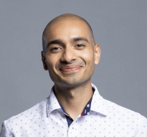

About the Workshop
Recent advances in machine learning are beginning to reshape how algorithms are designed, analyzed, and even proved correct. Beyond using learning as a heuristic speed-up, a growing body of work explores ML for algorithm design and proofs: learning-augmented algorithms with performance guarantees, data-driven synthesis of algorithmic strategies, and models that generate or verify formal reasoning such as proofs, invariants, and certificates.
These developments raise foundational questions at the interface of theory and practice: When can learned components provably improve worst-case guarantees or be used to give beyond worst-case guarantees? How should we formalize the interaction between data-driven predictions and classical algorithmic analysis? And to what extent can machine learning assist in producing explanations or proofs that are both correct and interpretable?
This workshop aims to bring together researchers from algorithms, learning theory, and automated reasoning to develop principled frameworks, identify common abstractions, and chart future directions for using machine learning in advancing theoretical computer science.
Organizers

Dravyansh Sharma
TTI-Chicago

Sandeep Silwal
University of Wisconsin–Madison

Ellen Vitercik
Stanford University
Speakers (tentative)
The following speakers have comfirmed interest in speaking at the workshop, and will join subject to the schedules working out.

Maria-Florina Balcan
Carnegie Mellon University

Vincent Cohen-Addad

Dylan Foster
Microsoft

Anupam Gupta
New York University

Piotr Indyk
MIT
Ravi Kumar
Debmalya Panigrahi
Duke University
Call for Spotlights, Posters, and Open Problems
We invite submissions for spotlight talks, posters, and open problems on topics related to the theme of the workshop, including but not limited to:
- Data-driven algorithm design
- Learning-augmented algorithms
- Beyond worst-case analysis and theoretical frameworks for learned algorithms
- Automated theorem proving and verification
- ML-assisted program synthesis and invariant generation
- Performative prediction and ML-based decision-making
- Interpretable and verifiable ML models for algorithmic reasoning
- Optimization, control, and learning in algorithm design
- Empirical and theoretical studies bridging ML and classical algorithms
- LLMs for algorithm design, configuration, reasoning, and analysis
- Learning to optimize
- Using ML to solve its own problems: robustness, privacy, and fairness
Who Should Attend?
The workshop is intended for researchers and students interested in the interplay between machine learning and theoretical computer science, including algorithms, optimization, online learning, automated reasoning, formal methods, verification, and learning-augmented decision making.
Planned activities include invited talks, spotlight presentations, posters, open-problem discussions, and collaborative sessions centered on ML-assisted theory.
Contact
For questions about the workshop, submissions, or logistics, please write to:
dravy[PLUS]lamp26[AT]ttic[DOT]edu